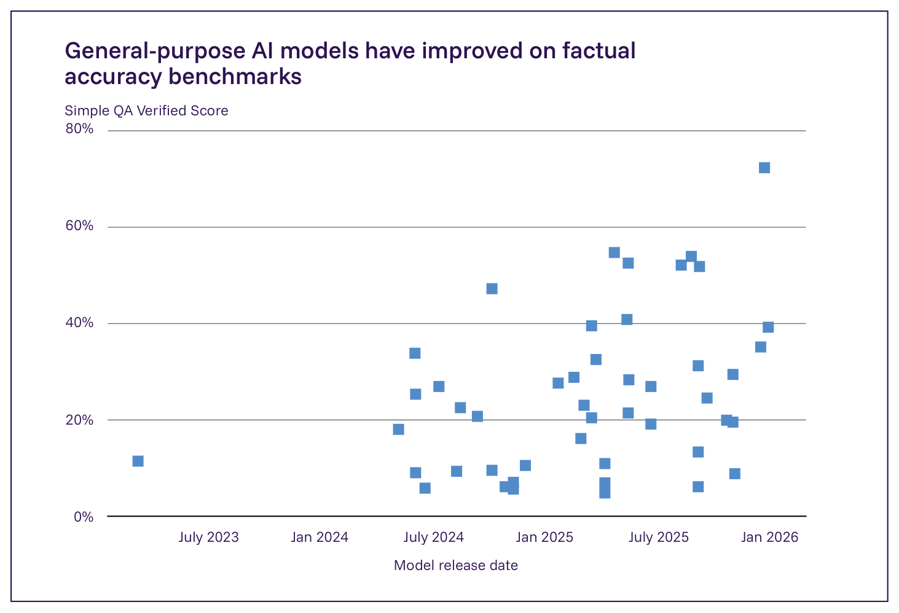
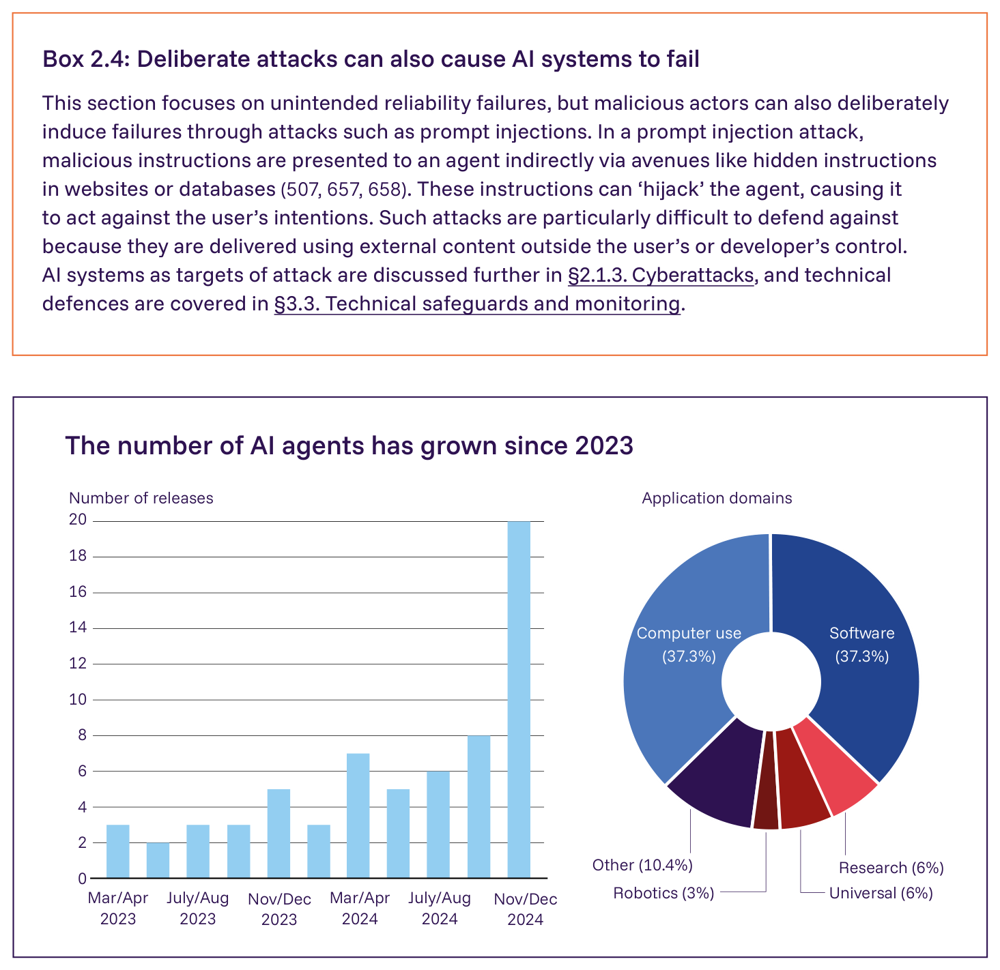

日本語訳
| 信頼性の問題 | 例 |
|---|---|
| ハルシネーション | 法的準備書面において存在しない判例を引用すること（617）／遺族の乗客のために存在しない割引運賃方針を引用すること（618）／不正確でバイアスのかかった医療情報を提供すること（619）／出来事についての時代遅れの情報を提供すること（620） |
| 基本的な推論の失敗 | 数学的計算を実行できないこと（621）／基本的な因果関係を推論できないこと（622*） |
| 分布外失敗（不慣れな、または異常な入力への失敗） | 背景の照明や文脈が変化した際に画像を誤分類すること（623） |
| ツール利用の失敗 | 利用者の非公開画像を第三者のツールに送信するAIエージェントによるプライバシー侵害（624）／短期作業記憶の失敗（625, 626） |
| マルチエージェントシステムの失敗：協調不全と対立 | 個々のインセンティブと集団の福祉目標との間の対立のために、共有資源を管理できないこと（627） |

Figure 2.10: SimpleQA Verifiedベンチマークにおける主要モデルの結果を、モデルのリリース日別に示す。このベンチマークは、モデルの事実性、すなわちモデルが確実に事実を想起する能力を測定する。これは、ハルシネーションのような信頼性の問題を検知するよう設計された、短い形式の質問応答（QA）形式を持つ。出典: SimpleQA Kaggle Leaderboard, November 2025 (632*)。

Figure 2.11: 2024年12月に実施された、展開された67のAIエージェントについての調査結果。左：主要なAIエージェントのリリースの時系列。右：AIエージェントが使用されている応用分野。6つの分野は、調査で特定された最も一般的な利用カテゴリーに基づいて定義されている。出典: Casper et al., 2025 (92)。Box 2.4: 意図的な攻撃もAIシステムを失敗させうる 本節は意図しない信頼性の失敗に焦点を当てているが、悪意のある行為者は、プロンプトインジェクションのような攻撃を通じて意図的に失敗を引き起こすこともできる。プロンプトインジェクション攻撃では、悪意のある指示が、ウェブサイトやデータベース内の隠された指示のような経路を通じて間接的にエージェントに提示される（507, 657, 658）。これらの指示は、エージェントを「乗っ取り」、利用者の意図に反して行動させる可能性がある。そのような攻撃は、利用者や開発者の制御外にある外部のコンテンツを使用して行われるため、防御することが特に困難である。攻撃の標的としてのAIシステムについては §2.1.3. サイバー攻撃 でさらに論じ、技術的な防御については §3.3. 技術的安全対策とモニタリング で扱う。